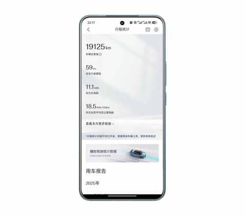
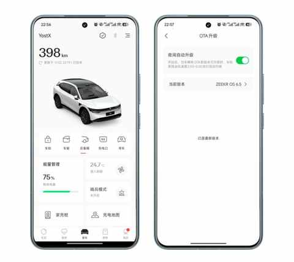
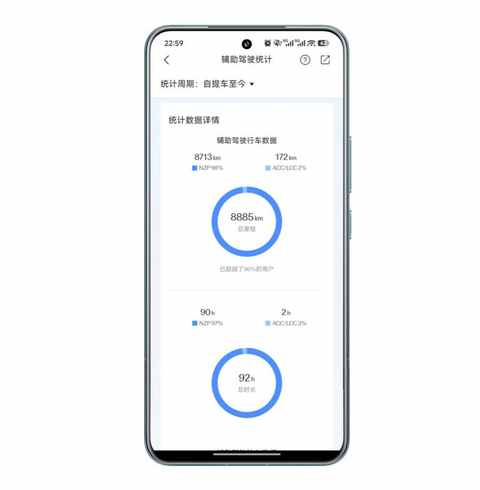

老车主看了极氪7X的焕新版之后：情绪稳定！
一、焕新版虽迟但到
初代极氪7X 是在去年的 9 月 20 号上市的，历时一年又一个月在今年的 10 月 28 日，焕新版正式上市。

作为已经提车 10 个月，开了接近 2w 公里的老车主。之前也写过几篇关于极氪 7X 的文章：
- 7 个月开极氪7X跑16000km后，分享这 5 个真实用车体验
- 拒绝偏科，回归实用：极氪7X，为家庭用户打造的一款“正常”的纯电 SUV
- 开了7年混动后，我为何最终投向纯电？一位车主的心路历程
在详细看了新款的相关介绍和博主的测评视频之后，表示情绪稳定，毕竟该来的总会来，而且极氪的改款节奏比前几年可是好太多太多了。

焕新版整体调整和优化的一些地方有不少都是自己感知较为明显，以及在车主群看到吐槽比较多的，例如：车窗玻璃从单层改成了双层。
二、情绪稳定的原因
1️⃣ 个人因素
不会太纠结以往的决定。
所以，便不会用现在的情况来和去年做直接的对比，今年的纯电 SUV 车型竞争更加激烈，我们普通人的选车的难度比去年只高不低。
2️⃣ 改的还挺好
① 几个常规升级
② 必要的造型调整
主要是尾门的造型改动，更贴近传统 SUV 一些。
提车的这 10 个月也有给一些亲戚朋友推荐过极氪7X，大概率是有别于传统 SUV 的造型还是让他们了解相关信息之后，没有去试驾感受。
③ 几个加分项
智驾小蓝灯终于有了！
这个由理想汽车首次采用的针对车辆驾驶状态的标识方式，已经被大众所熟知，当下每款支持辅助驾驶的车必须有这个配置！
终于用了双层夹胶玻璃！
日常城市道路行驶，单层玻璃和双层玻璃的差别很小，但是到了高速场景就不一样了，特别是时速到 110km 以上的时候，差的那几分贝在感知上很明显。
3️⃣ 是一款合格的家用 SUV
① 先说缺点
1）奇怪的左右晃动
一旦遇到减速带或不太平整的路面会有奇怪的左右晃动，这种晃动对司机的影响有限但是对乘客很不友好。
2）高速噪音偏大
主要是 时速110km 以上的的时候，感知上不是风噪，而更像是胎噪，从底盘传导到车内的。
3）软件能力待提升
车机系统升级慢，到现在都没有上极拓，能安装的 APP 很少。

辅助驾驶进步了，但与第一梯队尚有明显差距！

平时在城区道路基本是不用的，只在高速上才用，而且我是关掉了自动变道的功能，因为很多是无效变道。
② 再说优点
1）底盘不错
偏运动调教，操控性在家用 SUV 里是很好的类型。
变道和刹车的时候都比较流畅，是上手容易且好开的。
2）配置丰富且多为标配
例如：天幕遮阳帘、终身不限量的 车机流量、后排座椅调节幅度、HUD、仪表盘、8295芯片等等。
3）尺寸合理且空间表现优秀
现在很多家用 SUV 都无限接近 5m*2m，是名副其实的大车了，在日常使用中需要更专注一些，特别是停车的时候。
另外，在初上手的时候也需要更多的时间去适应车长和车宽。
就后排空间来说，我是很满意的。
本人的身高是 177 cm，体重为 75kg，在驾驶座调好座椅的情况下，我坐到驾驶座后方的座位，腿部空间充足。
三、结语
当下国内新能源车竞争愈加激烈，作为新能源车主，自然无法避免的会关注各种新车的发布和相关资讯。
逐渐学会了去适度关注相关信息，毕竟车的配置和数码产品越来越类似，可车毕竟不是数码产品，车是大宗消费品。
大部分人 一辆车都要使用 5-10 年，接下来我依然会适度关注相关信息，把更多精力放在如何用车上，毕竟车是用来助力美好生活的工具之一。
近期文章
连续两个月跑量超200km：我的3个意外收获！
中年减肥成功2年后，才发现这5个坑当初要是有人点醒我该多好！
中年减肥成功2年后，才发现维持体重靠的不是毅力，而是这5个微习惯
一个中年男人消费观的 3 个转变
8年驾龄复盘：新手期的每一次手忙脚乱，都成了现在我安全驾驶的“肌肉记忆”
一个中年人的2025年桐庐半马赛后复盘：我的 5 个收获
一个中年男人的140次发文，换来第一篇的10万+
为什么说放弃Apple Watch很容易，而真正考验人的是下一块智能手表的选择？
运动后总酸痛？这4个家常小物件，是放松肌肉的“隐形神器”
我的电车购买逻辑：用100kWh大电池的“确定性”，替代三电优化的“不确定性”